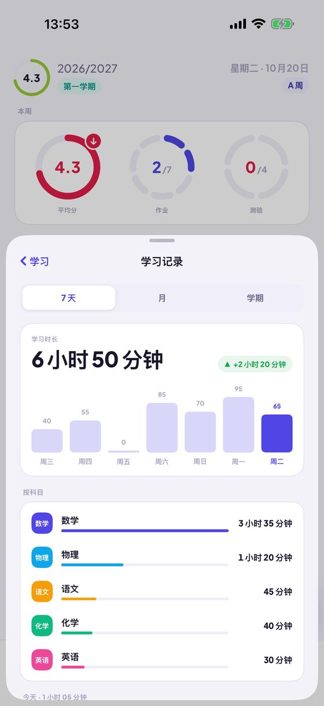
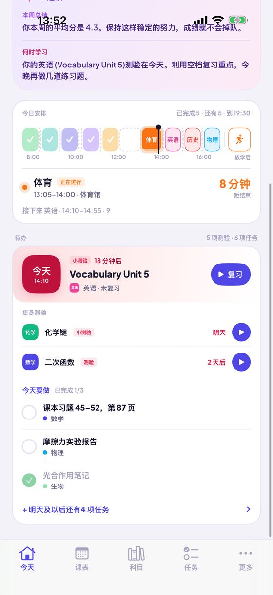
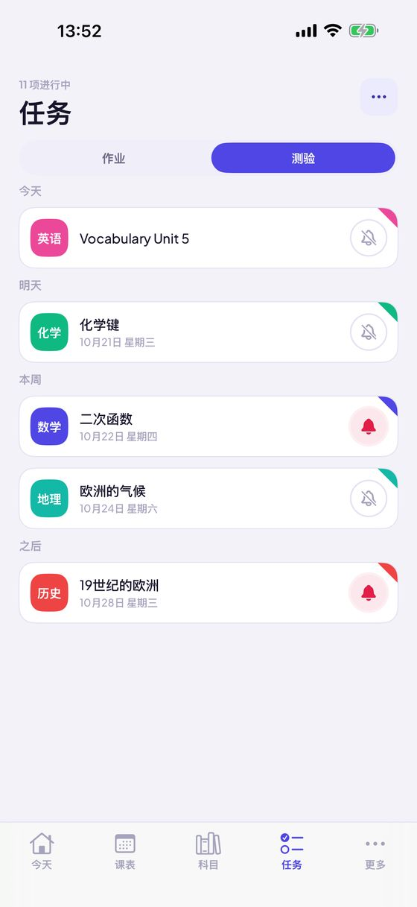
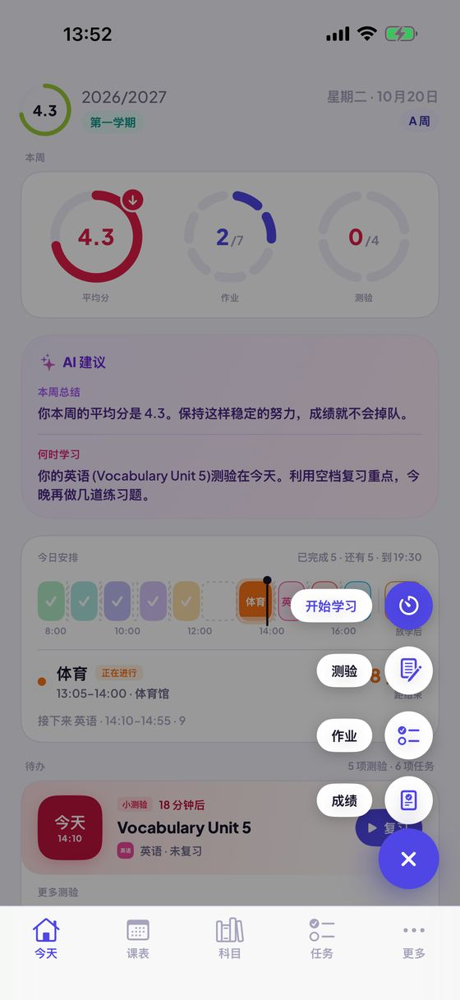

今日
一天的安排、成绩 和 AI 建议，尽在一处
- “本周”圆环：本周平均分（带上升或下降箭头），以及已经完成的作业和测验数量。
- 以时间轴展示你的一天：按科目配色的课程、课间和空档、正在进行的课程及剩余分钟数。
- “待办”：带倒计时的最近一次测验、已逾期的作业，以及可一键打勾的今日任务。
- 快速添加成绩、作业、测验或学习记录。
Kajet 是一款适合中小学和大学的学生规划应用。一天的安排一目了然，成绩带平均分，作业和测验带提醒，还有支持番茄钟的学习计时器。无需账号，没有广告。

今日
课表

成绩与平均分

作业与测验

学习模式

AI 建议（可选）
ECTS 学分、期末成绩、ECTS 加权平均分，以及自行设定的奖学金门槛和还需要拿到的成绩。
在主屏幕和锁定屏幕上显示下一节课。可以问 Siri 下一节课、今天的作业或平均分，也可以用语音添加成绩。
无需账号，没有广告，数据只保存在你的 iPhone 上。可选的 AI 建议借助 Apple Intelligence 完全在设备上运行。




应用、小组件、Siri 和快捷指令支持 13 种语言。Kajet 会跟随你 iPhone 的语言。
无需账号，没有广告，数据只属于你。
在 App Store 下载Kajet 以波兰的学校和大学体系为蓝本设计（1–6 分制、2.0–5.0 的大学评分制、ECTS），但在任何地方都能使用。适用于 iOS 17 或更高版本的 iPhone；AI 建议需要 iOS 26 和 Apple Intelligence。